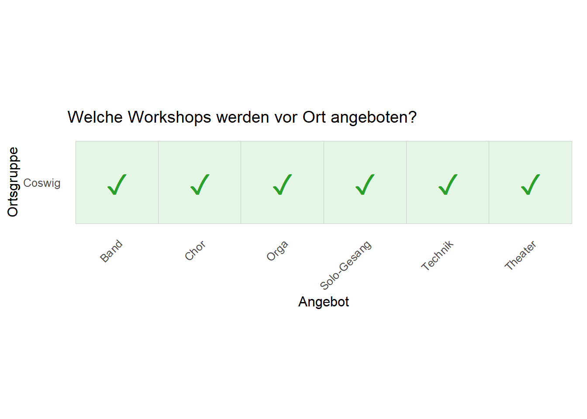
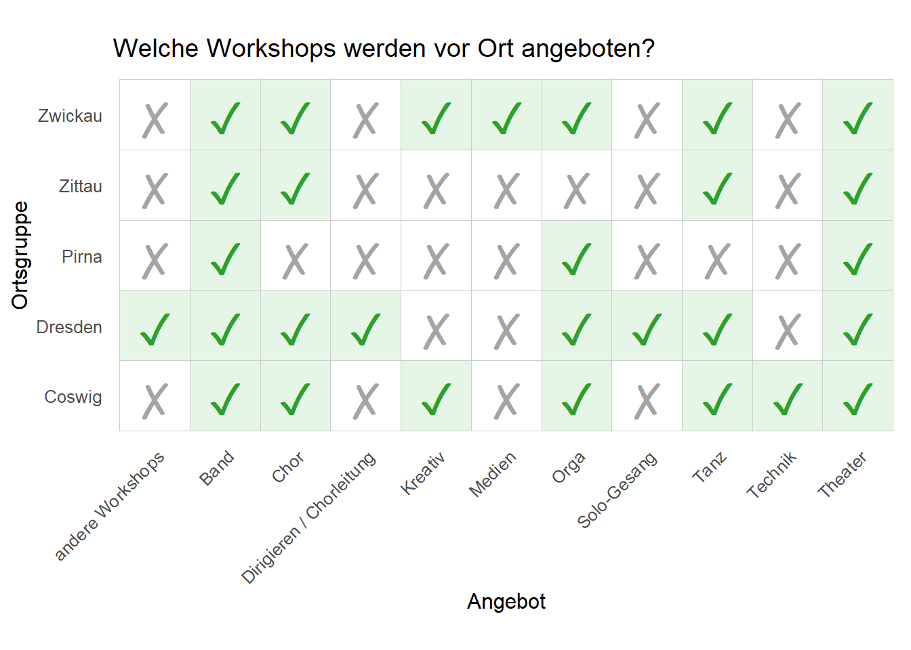
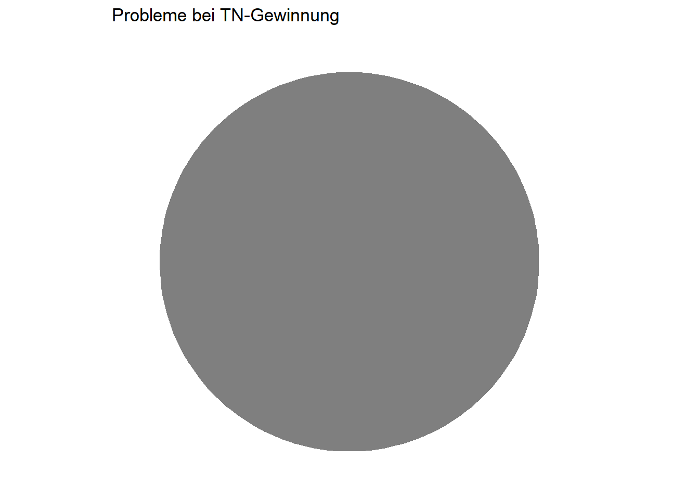

Sachsen
Auf dieser Seite werden euch Ergebnisse der Befragung angezeigt, die die TEN SING Region Sachsen betreffen.
Im Folgenden seht ihr eine Übersicht über die einzelnen Ortsgruppen der Region Sachsen. Laut Teilnehmer*innen-Fragebogen gibt es 1 Ortsgruppen.1 0 haben wir davon über den Ortsgruppen Fragebogen erreicht.2
Aufgelistet sind die Anzahl der aktiven TEN SINGer*innen pro Ortsgruppe sowie die Anzahl der Auftritte pro Jahr.
ERKLÄRUNG
Teilnehmende sind alle, die sich in den Ortsgruppen engagieren und an TEN SING Veranstaltungen teilnehmen, und dabei keine offizielle Leitungsfunktion übernehmen.
Mitarbeitende sind alle hauptamtlichen Mitarbeiter*innen in den Ortsgruppen und Ehrenamtlichen, die eine Verantwortungsfunktion übernehmen.
Zusätzlich gibt die Spalte “Hauptamt” an, ob eine Ortsgruppe hauptamtliche Mitarbeitende hat.
Die Aktiven sind alle Teilnehmenden und Mitarbeitenden zusammen.
Datenquelle
⚠️ Durchschnittsalter:
Für Ortsgruppen, in denen weniger als 3 Personen die Umfrage beantwortet haben, wird aus Datenschutzgründen kein Durchschnittsalter angezeigt.
Der Gesamt-Durchschnitt ist ein gewichteter Mittelwert. Ortsgruppen mit mehr Teilnehmenden beeinflussen den Wert stärker als solche mit wenigen.
Relevante Fragen:
- Frage “In welcher Region liegt deine Ortsgruppe?” im Ortsgruppen Fragebogen
- Frage “Wie heißt deine Ortsgruppe?” im Ortsgruppen Fragebogen
- Frage “Wie heißt deine Ortsgruppe?” im Teilnehmer*innen Fragebogen
| Fragebogen | Teilnehmer*innen | Mitarbeitende | Insgesamt |
|---|---|---|---|
| Teilnehmer*innen Fragebogen | 51 | 1 | 4 |
| Ortsgruppen Fragebogen | 0 | 0 | 0 |
1: Anzahl der Antworten auf den Teilnehmer*innen Fragebogen
Angebote in den Ortsgruppen
Im Folgenden seht ihr, welche Workshops in welcher Ortsgruppe angeboten werden.


Info
ERKLÄRUNG: TODO
Datenquelle TODO*
Zusätzlich wollten wir von euch wissen, an welchen Workshops ihr teilnehmt! So habt ihr geantwortet:
Info
ERKLÄRUNG / INTERPRETATIONSHILFE: Insgesamt ANZAHL Personen haben eine Antwort auf diese Frage gegeben. ANZAHL2 Personen gaben wiederum an, dass sie gerne am TheaterworkshopTheaterangebot teilnehmen. ANZAHL2 von ANZAHL Personen entspricht PROZENT Prozent. Diesen Wert seht ihr im oberen Schaubild visualisiert.
Datenquelle TODO
Neue Teilnehmer*innen
Die Arbeit von TEN SING lebt vom Engagement vieler Menschen. Deshalb ist die Gewinnung neuer Teilnehmer*innen genauso wichtig wie ein beständiges Team. Aus diesem Grund wollten wir wissen, wie neue Teilnehmende zu TEN SING kommen - oder genauer gesagt: zu TEN SING Sachsen!
Interpretationshilfe
- y-Achse/senkrechte Achse: Antwortoptionen, die ausgewählt werden konnten.
- x-Achse/waagerechte Achse: Prozentzahl der Teilnehmer*innen, die diese Option als eine ihrer Antworten ausgewählt haben.
Es handelt sich um eine Multiple-Choice Frage, das heißt, Teilnehmende konnten mehrere Optionen auswählen. Das ist der Grund, wieso sich die Prozentzahlen nicht auf 100%, sondern auf 160% summieren.
Beispielinterpretation: 20% der Teilnehmenden gaben als einen ihrer Zugangswege zu TEN SING an, von einer anderen Person mitgenommen worden zu sein.
Interpretationshilfe
- y-Achse/senkrechte Achse: Antwortoptionen, die ausgewählt werden konnten.
- x-Achse/waagerechte Achse: Prozentzahl der Teilnehmer*innen, die diese Option als eine ihrer Antworten ausgewählt haben.
Es handelt sich um eine Multiple-Choice Frage, das heißt, Teilnehmende konnten mehrere Optionen auswählen. Das ist der Grund, wieso sich die Prozentzahlen nicht auf 100%, sondern auf 220% summieren.
Beispielinterpretation: 100% der Teilnehmenden gaben als einen ihrer Zugangswege zu TEN SING an, von einer anderen Person mitgenommen worden zu sein.
Datenquelle
Frage: “Wie bist du zu TEN SING gekommen?” im Teilnehmer*innen Fragebogen
Darüber hinaus wollten wir wissen, wie die Ortsgruppen auf die Gewinnung neuer Teilnehmer*innen blicken, d.h. welche Maßnahmen sie verfolgen und wie erfolgreich diese sind.
Info TODO
ERKLÄRUNG / INTERPRETATIONSHILFE:
Datenquelle
Frage: “Welche Maßnahmen setzt ihr vor Ort ein, um neue Teilnehmende zu finden?” im Ortsgruppen Fragebogen
Unterstützungsbedarfe der Ortsgruppen
Um eure Ortsgruppe gezielt unterstützen zu können, bspw. bei der Gewinnung neuer Teilnehmender, und um Bedarfe besser erkennen zu können, wollten wir von euch wissen: Gibt es bei euch vor Ort gerade Probleme neue Teilnehmende zu finden? Was läuft gut? Und an welcher Stelle wünscht ihr euch, Unterstützung zu bekommen?
Gibt es gerade Probleme neue Teilnehmende zu finden?


An welcher Stelle gibt es Unterstützungsbedarfe?
Datenquelle
Frage: “Bei welchen Themen würdet ihr gern Unterstützung oder Begleitung nutzen?” im Ortsgruppen Fragebogen
Spalten im Roh-Datensatz:
[1] "unterstuetzungsbedarfe/deutschlandweite_Seminare_Workshops"
[2] "unterstuetzungsbedarfe/Oeffentlichkeitsarbeit_Social_Media"
[3] "unterstuetzungsbedarfe/Einheitliche_CloudSpeicher_Plattform"
[4] "unterstuetzungsbedarfe/Schulung_von_Teamern_Ehrenamtlichen"
[5] "unterstuetzungsbedarfe/Austausch_Chorsaetze"
[6] "unterstuetzungsbedarfe/Standpunkte_Hilfestellungen_Themen"
[7] "unterstuetzungsbedarfe/Gewinnung_von_neuen_Teilnehmenden"
[8] "unterstuetzungsbedarfe/Internationale_Zusammenarbeit"